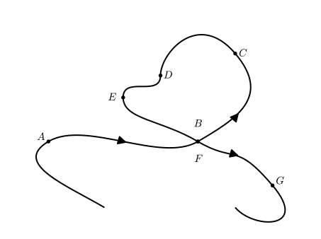

How can we measure the direction of travel on a parametrized curve?
How can we measure the direction of turning on a parameterized curve?
How can we measure the axis of rotation along a parameterized curve?
In Section 10.1, we saw how a vector-valued function of one variable will graphically correspond to a curve in space. While the application of derivatives, integrals, and limits apply to these functions componentwise, we will need to apply our calculus and vector tools together to measure important properties of these curves. Conceptually, you should think about the parameterization of the curve in space as a description on how to travel through those points in space. Remember that parameterizations are not unique; There is more than one way to walk the same path.
Figure10.4.1.A plot of our racetrack
For example, consider the curve in space that we want a race track as shown in Figure 10.4.1. Not every driver will travel along this racetrack in the same way, but every driver has to go through these same points in space (everyone will stay on the track and not take shortcuts). In the vocabulary of this chapter, any parameterization of this curve has to contain the same points, but can possibly go through these \(x\text{,}\)\(y\text{,}\)\(z\) coordinates at different times. More generally, some properties you measure will depend on the particular way that a driver goes along the course and some properties will be the same for all drivers (when measured at the same location on the track).
Preview Activity10.4.1.
Suppose that you are riding a bicycle along the path given below (with the direction given by the arrows). Notice that at points B and F the bike path crosses itself to go in a different direction.

Figure10.4.2.The path of a bike ride with seven points labeled
(a)
At each of the points on the curve, draw a vector in the direction of travel.
(b)
At each point, decide whether the bike is turning left or right
Subsection10.4.1Direction of travel
Based on our work in Subsection 10.2.1, if \(\vr(t)\) is a parameterization of a curve in space, then the velocity vector, \(\vv(t)=\vr'(t)\text{,}\) is in the direction of travel. Since the speed, \(\Vert\vv(t)\Vert\text{,}\) is not always 1 (the velocity is not a unit vector), we define the direction of travel as follows.
Definition10.4.3.
The unit tangent vector to a curve is denoted by \(\vec{T}(t)\) is computed by
and measures the direction of travel along a parameterized curve.
From the definition, the unit tangent exists as long as the velocity exists and is not the zero vector. If the velocity vector is \(\vec{0}\text{,}\) then the object is not moving, thus the direction of travel would not make sense at that instant. If there is a jump or discontinuity in the derivative (\(\vv\) does not exist), the direction of travel at that instant does not make sense because there is not a consistent way to define motion.
The definition of \(\vT\) allows us to separate the velocity into its magnitude (speed) and direction (unit tangent). Remember that \(\vT\) changes along the curve and is calculated as a function of the parameter.
Example10.4.4.
For our first example, we will look computing the unit tangent vector of a helix. In particular, we will look at the helix traced out by \(\vr(t)=\langle \cos(t),\sin(t),\frac{t}{\pi}\rangle \text{.}\)
Figure10.4.5.A plot of our racetrack
Based on our parameterization, we have velocity vector given by \(\vv(t)=\langle -\sin(t),\cos(t),\frac{1}{\pi} \rangle \text{,}\) which has speed given by
One of the useful and unique ideas for this example is that we have a constant speed. No matter what time look at, the speed is always \(\sqrt{1+\frac{1}{\pi^2}} \text{.}\) Using Definition 10.4.3, we can see that
If we look at \(t=\frac{\pi}{2}\text{,}\) then \(\vT(\frac{\pi}{2})= \frac{1}{\sqrt{1+\frac{1}{\pi^2}}}\langle -1,0,\frac{1}{\pi} \rangle\text{.}\) If \(t=\frac{5\pi}{4}\text{,}\) then \(\vT(\frac{5\pi}{4})= \frac{1}{\sqrt{1+\frac{1}{\pi^2}}}\langle \frac{\sqrt{2}}{2},-\frac{\sqrt{2}}{2},\frac{1}{\pi} \rangle\text{.}\) In Figure 10.4.6, \(\vT(\frac{\pi}{2})\) is plotted in red and \(\vT(\frac{5\pi}{4})\) is plotted in blue. Both of these vectors are unit length and tangent to the curve in the direction of travel for that instant.
Figure10.4.6.A plot of our racetrack
Note that we can also find \(\vT(\frac{\pi}{2})\) by taking \(\vv(\frac{\pi}{2}) = \langle -1,0,\frac{1}{\pi} \rangle \) and shrinking \(\vv\) to be a unit vector. We will often use this idea that because our definitions and theorems work for all \(t\)-values, then we can apply them at a specific \(t\)-value. This often has the added advantage that computations tend to be manageable to be done by hand because you are not concerned with how the measurement is done for every time.
Activity10.4.2.
(a)
Find \(\vv\text{,}\) speed, and \(\vT\) for a line given by the parameterization \(\vr(t)=\langle 3t-1,2-2t,5+t\rangle\text{.}\) Write a few sentences about why your results make sense and do not vary over time.
(b)
Find \(\vv\text{,}\) speed, and \(\vT\) for the curve given by the parameterization \(\vr(t)=\langle t,t^2,t^3\rangle\text{.}\)
(c)
Find \(\vT\) at the point \(P\) if the tangent line to the curve through \(P\) is given by \(\langle 2-7t, 3t+1,-4t-1\rangle\text{.}\)
Subsection10.4.2The Direction of Turning
Recalling our analogy of our parameterization describing how someone drives along a racetrack, \(\vT\) measures the direction that that car is heading in at any given instant. If we look at \(t=2\) on our track, we see that \(\vT(2)\approx \langle -0.881293609455976, -0.469142150813613, 0.0568085932059239 \rangle\text{.}\) This is shown in Figure 10.4.7. What direction is the car turning at \(t=2\text{?}\) You can see by the plot that the car will be be turning left, but that is a relative direction to the car. So how can we measure the direction that the car is turning at this instant, in terms of the \(xyz\)-coordinate system?
Figure10.4.7.A plot of our racetrack with \(\vT(2)\) plotted in red
Let’s look at \(\vec{T}'=\frac{d\vec{T}}{dt}\text{,}\) which will measure how quickly \(\vec{T}\) is changing in terms of the parameter. Remember that vectors have magnitude and direction, so the derivative of a vector valued function of 1 variable will measure the change in the magnitude and change in the direction. Since \(\vT\) will always have length 1 (when \(\vT\) exists), all of the change in \\(\vT\) will correspond to a change in direction. So the direction of \(\vec{T}'=\frac{d\vec{T}}{dt}\) will be exactly what we are looking for; namely, \(\vec{T}'=\frac{d\vec{T}}{dt}\) will be in the direction of turning. We don’t care (for now) about how fast the car is turning, just what direction that turning is in. So we define the unit normal vector, denoted \(\vN\text{,}\) as the unit vector in the direction of \(\vec{T}'=\frac{d\vec{T}}{dt}\text{.}\)
Definition10.4.8.
The unit normal vector to a curve is denoted by \(\vec{N}(t)\) is computed by
The unit normal vector measures the direction of turning along a parameterized curve.
Activity10.4.3.
Based on the definition of the unit normal, there are a few ways that \(\vN\) will not exist. We will look at the meaning three different cases:
\(\vN\) will not exist if \(\vT\) does not exist
\(\vN\) will not exist if \(\vT'=\frac{d\vec{T}}{dt}\) does not exist
\(\vN\) will not exist if \(\vT'=\frac{d\vec{T}}{dt}=\vec{0}\)
(a)
Draw an example of a curve such that \(\vT\) does not exist at a point on your curve. Explain why \(\vT\) does not exist based on your plot and explain why \(\vN\) does not exist at the same point.
(b)
Draw an example of a curve such that \(\vT'=\frac{d\vec{T}}{dt}\) does not exist at a point on your curve. Explain why \(\vT'=\frac{d\vec{T}}{dt}\) does not exist based on your plot and explain why \(\vN\) does not exist at the same point.
(c)
Draw an example of a curve such that \(\vT'=\frac{d\vec{T}}{dt}=\vec{0}\) at a point on your curve. Explain why \(\vT'=\frac{d\vec{T}}{dt}=\vec{0}\) based on your plot and explain why \(\vN\) does not exist at the same point.
Note that the derivative of \(\vT\) is easily calculated for all time and this will rarely be the case. Further, making a unit vector in the direction of \(\vT(t)'=\frac{d\vT}{dt}\) will be fairly easy and give us the following calculation:
We can calculate \(\vN(\frac{\pi}{2})=\langle 0,-1,0 \rangle\) and \(\vN(\frac{5\pi}{4})=\langle \frac{\sqrt{2}}{2},\frac{\sqrt{2}}{2},0 \rangle\text{.}\) If we add these vectors to the plot of the helix with the Unit Tangent Vectors, as in , we can see that the direction of turning (as measured by \(\vN\)) is pointing toward the center of the helix. This should make sense the the direction you are turning is toward the inside of the circular trace. Note that the Unit Tangent vector has a vertical component because which corresponds to going “up” the helix but there is no vertical component to \(\vN\text{.}\) This is because there is vertical motion, but there is no turning in the vertical direction. The z component of \(\vT\) is unchanging so the vertical component of \(\vT'\) will be zero.
Figure10.4.10.A plot of the helix with \(\vT\) and \(\vN\) plotted for a couple points
This example is the exceptional case where \(\vN\) is easily calculated directly from the definition and the calculations are fairly clean. In the next activity, we will look at a curve with a simple polynomial parameterization that will demonstrate how easily the calculation of \(\vN\) can go off the rails.
Activity10.4.4.
In general, calculating \(\vN\) for all times ends up being very difficult because there are multiple compositions of functions involved which means there is a nesting of chain rules involved in the definition. In this activity, we will examine how to go through the direct calculation of \(\vN\) for a curve parameterized by \(\vr(t) =\langle t,t^2,t^2\rangle \text{.}\)
(a)
Given the parameterization, \(\vr(t) =\langle t,t^2,t^2\rangle \text{,}\) calculate \(\vv(t)\) and \(\text{speed}(t)\text{.}\)
(b)
Now calculate \(\vT(t)\) for the \(\vr(t) =\langle t,t^2,t^2\rangle \) path.
(c)
We are going to take it slow and calculate the first component of \(\vT'=\frac{d\vT}{dt}\text{.}\) Remember that the derivative with respect to \(t\) is computed componentwise.
(d)
Now calculate the second component of \(\vT'=\frac{d\vT}{dt}\text{.}\)
(e)
Now calculate the third component of \(\vT'=\frac{d\vT}{dt}\text{.}\)
(f)
Put together your work for the three components of \(\vT'=\frac{d\vT}{dt}\) and compute \(\Vert\frac{d\vT}{dt}\Vert\text{.}\)
(g)
You likely gave up on the previous task or ran out of paper to write out \(\frac{d\vT}{dt}\) and \(\Vert\frac{d\vT}{dt}\Vert\text{.}\) Instead of more punishing algebra, describe how you would calculate \(\vN\) if you had \(\frac{d\vT}{dt}\) and \(\Vert\frac{d\vT}{dt}\Vert\text{.}\)
As talked about in Subsection 10.4.1, the unit tangent vector, \(\vT\text{,}\) measures the direction of travel along a parameterized curve. The unit normal vector, \(\vN\text{,}\) measures the direction that an object is turning (in order to stay on the curve). In Figure 10.4.10, we saw that the unit tangent and unit normal vectors were orthogonal to each other (when measured at the same point).
Question10.4.11.
Can \(\vN\) have any part parallel to \(\vT\) or must \(\vT\) and \(\vN\) be orthogonal?
By Definition 10.4.8, the unit normal vector is parallel to \(\vT'=\frac{d\vT}{dt}\text{.}\) The derivative of the unit tangent vector will measure the change in \(\vT\text{,}\) and since \(\vT\) is a vector, this will include change in the magnitude and in the direction of \(\vT\text{.}\) Since the length of \(\vT\) does not change, then all of \(\vT'=\frac{d\vT}{dt}\) will have to be a change in the direction of \(\vT\) and not at all in the direction of \(\vT\text{.}\) This is an intuitive argument for why \(\vT\) and \(\vN\) are orthogonal.
(Maybe this becomes an exercise the way Steve did that) We can also give a more rigorous algebraic argument, but this argument does not provide insight into the measurements or relationship between \(\vT\) and \(\vN\text{.}\) For this argument, we will look at the derivative of \(\Vert \vT \Vert^2\text{.}\) Because the length of \(\vT\) is constant, then \(\frac{d}{dt}\left(\Vert \vT \Vert^2 \right)=0\text{.}\) To simplify \(\frac{d}{dt}\left(\Vert \vT \Vert^2 \right)\text{,}\) we will use properties of the dot product related to the magnitude, the derivative product rule (across the dot product), then the commutative property of the dot product, respectively. .
If \(2 \vT \cdot \vT' =0\text{,}\) then \(\vT\) and \(\vT'\) are orthogonal. Since \(\vN\) is parallel to \(\vT'\text{,}\) then \(\vT\) and \(\vN\) are orthogonal.
Subsection10.4.3The Binormal Vector
Definition10.4.12.
The Binormal vector, \(\vec{B}\text{,}\) for a parameterized curve is defined as
This definition of \(\vB\) creates a three dimensional right handed coordinate system that is relative to the motion along the curve. The Binormal vector will be a unit vector because \(\Vert \vT \times \vN \Vert = \Vert \vT\Vert \Vert \vN \Vert \sin(\theta)\) where \(\theta\) is the angle between \(\vT\) and \(\vN\text{.}\) Since \(\vT\) and \(\vN\) are unit vectors and orthogonal to each other, then \(\Vert \vT\Vert \Vert \vN \Vert \sin(\theta)= 1\text{.}\) B will give the axis of rotation for the motion along the curve. Note that this measure of rotation follows our right handed measure of rotation. If you put the fingers of your right hand in the direction of travel (\(\vT\)) and curl your fingers in the direction of turning (\(\vN\)), then your thumb will correspond to the axis of rotation based on how you are moving along the curve.
This TNB frame is sometimes called the Frenet frame and is very useful in environments like aviation and space travel because so much of the relevant information needs be in terms of relative measurements to the craft and it’s motion.
Example10.4.13.
In this example, we will complete our calculation of the TNB frame for the helix given by \(\vr(t)=\langle \cos(t),\sin(t)\frac{1}{pi}\rangle \text{.}\) From Example 10.4.4 and Example 10.4.9 we have the following:
Figure10.4.14.A plot of the helix with the TNB frame plotted
Note that as you change the \(t\)-value and move around the helix, the unit tangent points in the direction of travel, the unit normal points in the direction the object is turning (always to the left while going up the helix), and the Binormal vector is the axis of rotation for the \(\vT\) and \(\vN\) vectors. If you curl the fingers on your right hand from the direction of \(\vT\) toward the direction of \(\vN\text{,}\) notice that your thumb will point in the direction of \(\vB\text{.}\) This sets up the TNB frame as a right-handed coordinate system that changes with the relative motion of the object.
Subsection10.4.4The Driver or the Road: TNB Frame
In this subsection, we will talk about whether the measurements of \(\vT\text{,}\)\(\vN\text{,}\) and \(\vB\) will be properties of the driver or the road. A parameterized curve also has a stated orientation (direction of travel). Remember that a measurement involving a parameterized curve is a property of the driver if two different parameterizations can have the different measurements at the same location on the curve. Remember that this does not mean that you look at the same parameter value on the curve, but rather the same location on the curve. A measurement on a parametertized curve is a property of the road if every parameterization of this curve must have the same measurement for a fixed location on the curve. This is the same ideas as was done in Activity 10.3.5.
Activity10.4.5.
(a)
Direction of Travel: Each race car has a 1 meter arrow attached to the hood of the car which points straight ahead. This arrow will measure the three dimensional vector that is the direction of travel. Is the direction of travel a property of the driver or the road? Be sure to explain your answer.
(b)
Direction of Turning: The direction of turning is measured by checking to see if the steering wheel is turned left or right. We are not measuring how much the wheel is turned in either direction, just whether the wheel is turned left or right. If the steering wheel is not turned either way at instant we measure the direction of turning, then we say there is no direction of turning (because the car isn’t turning at that instant). Is the direction of turning a property of the driver or the road? Be sure to explain your answer.
(c)
Is \(\vB\) a property of the driver or the road? Justify your ideas.
Subsection10.4.5Summary
The unit tangent vector, \(\vT(t)=\frac{\vv}{\Vert\vv\Vert}\text{,}\) measures the direction of travel for an object along a parameterized curve
The unit normal vector, \(\vN(t)=\frac{\vT'}{\Vert\vT'\Vert}\text{,}\) measures the direction that an object is turning in order to stay on a parameterized curve
The binormal vector, \(\vB(t)= \vT \times \vN\text{,}\) is the direction for the axis for which \(\vT\) and \(\vN\) are rotating around
Exercises10.4.6Exercises
The WeBWorK problems are written by many different authors. Some authors use parentheses when writing vectors, e.g., \((x(t),y(t),z(t))\) instead of angle brackets \(\langle x(t),y(t),z(t) \rangle\text{.}\) Please keep this in mind when working WeBWorK exercises.
1.
Find the unit tangent vector at the indicated point of the vector function
\begin{equation*}
\mathbf{r}(t) = e^{7 t}\cos t \,\mathbf i +
e^{7 t}\sin t \,\mathbf j + e^{7 t} \,\mathbf k
\end{equation*}
Consider the moving particle whose position at time \(t\) in seconds is given by the vector-valued function \(\vr\) defined by \(\vr(t) = 5t \vi + 4\sin(3t) \vj + 4\cos(3t) \vk\text{.}\) Use this function to answer each of the following questions.
Find the unit tangent vector, \(\vT(t)\text{,}\) to the space curve traced by \(\vr(t)\) at time \(t\text{.}\) Write one sentence that explains what \(\vT(t)\) tells us about the particle’s motion.
Determine the speed of the particle moving along the space curve with the given parameterization.
Find the exact distance traveled by the particle on the time interval \([0,\pi/3]\text{.}\)
Find the average velocity of the particle on the time interval \([0, \pi/3]\text{.}\)
Determine the parameterization of the given curve with respect to arc length.
4.
Consider the standard helix parameterized by \(\vr(t) = \cos(t) \vi + \sin(t) \vj + t \vk\text{.}\)
Recall that the unit tangent vector, \(\vT(t)\text{,}\) is the vector tangent to the curve at time \(t\) that points in the direction of motion and has length 1. Find \(\vT(t)\text{.}\)
Explain why the fact that \(| \vT(t) | = 1\) implies that \(\vT\) and \(\vT'\) are orthogonal vectors for every value of \(t\text{.}\) (Hint: note that \(\vT \cdot \vT = |\vT|^2 = 1,\) and compute \(\frac{d}{dt}[\vT \cdot \vT]\text{.}\))
For the given function \(\vr\) with unit tangent vector \(\vT(t)\) (from (a)), determine \(\vN(t) = \frac{1}{|\vT'(t)|} \vT'(t)\text{.}\)
What geometric properties does \(\vN(t)\) have? That is, how long is this vector, and how is it situated in comparison to \(\vT(t)\text{?}\)
Let \(\vB(t) = \vT(t) \times \vN(t)\text{,}\) and compute \(\vB(t)\) in terms of your results in (a) and (c).
What geometric properties does \(\vB(t)\) have? That is, how long is this vector, and how is it situated in comparison to \(\vT(t)\) and \(\vN(t)\text{?}\)
Sketch a plot of the given helix, and compute and sketch \(\vT(\pi/2)\text{,}\)\(\vN(\pi/2)\text{,}\) and \(\vB(\pi/2)\text{.}\)